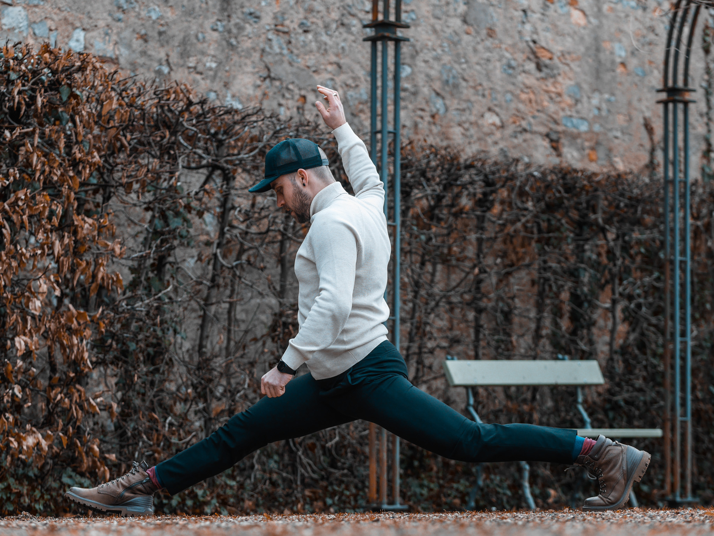
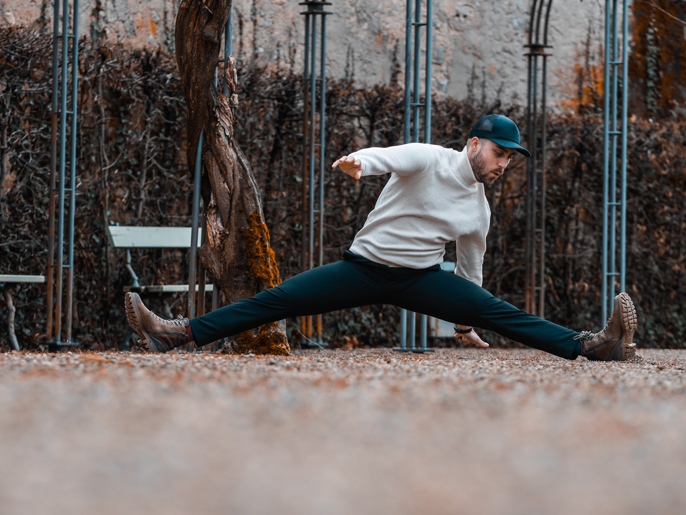
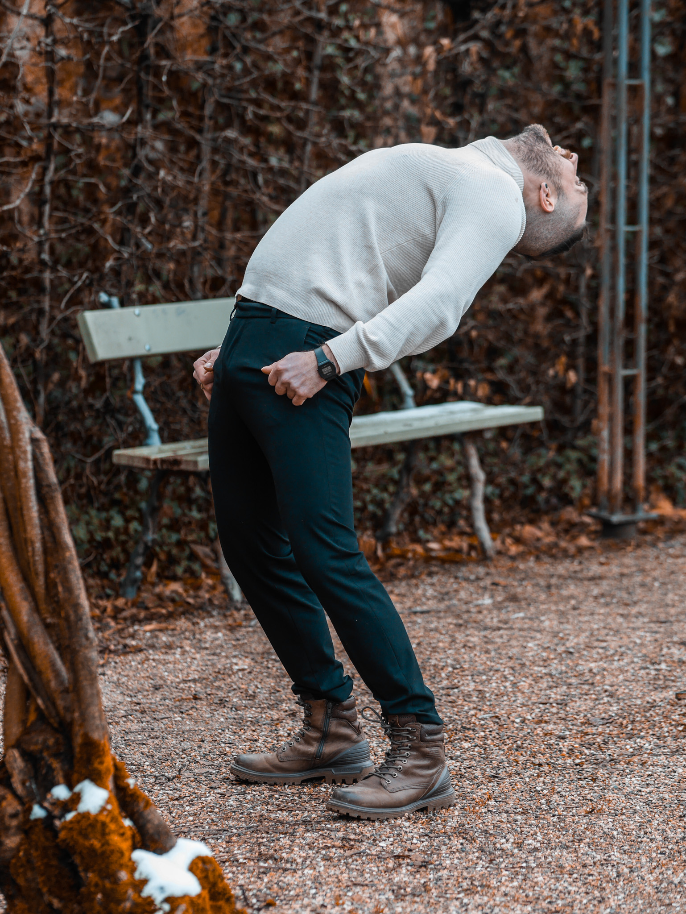
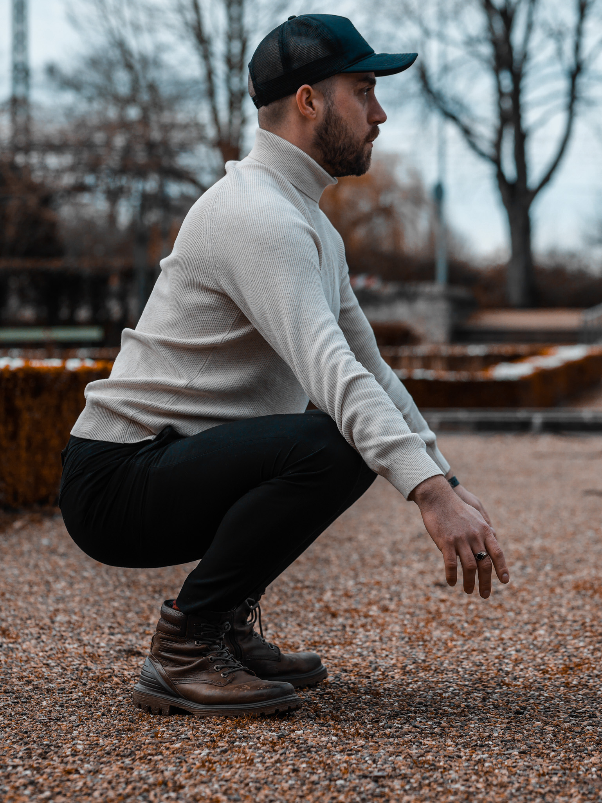

Front Split, Middle Split und Standing Backbend übe ich bis heute. Auch die tiefe Hocke gehört für mich als Holzrussen dazu. Auf den Fotos sieht man jeweils einen Moment, der von wunderschönen Fotogräfin Christina aufgenommen wurde.
Front Split
Beim Front Split geht ein Bein nach vorn und das andere nach hinten. Vorn spüre ich vor allem die Beinrückseite, hinten die Vorderseite der Hüfte. Wenn ich die Beine wechsle, kann sich die gleiche Position ganz anders anfühlen.
Ich achte darauf, wie sich mein Becken bewegt, wenn ich ein Stück tiefer gehe. Kann ich die Bewegung anhalten und aus eigener Kraft wieder zurückgehen? Das ist für mich ein guter Maßstab, wenn ich die beiden Seiten vergleiche.

Middle Split
Beim Middle Split gehen beide Beine zur Seite. Mich interessiert dabei, wie viel Spannung ich an den Innenseiten der Oberschenkel aufbauen kann und die Position kontrolliert halten zu können.

Standing Backbend
Standing Backbend gehört für mich an die Spitze des Eisbergs, weil es so einzigartig die Hüfte belastet und gleichzeitig den Brustkorb öffnet - genau was ich brauche!
Lange Zeit war diese Übung verpönt wegen der angeblichen Gefahr, heute wissen wir, dass mit einer richtigen Technik es den Rücken heilen kann.

Squat
In der tiefen Hocke zeigt sich für mich, wie Hüfte, Knie und Sprunggelenke zusammenarbeiten. Von vorn sehe ich gut, wie meine Knie dem Fußwinkel folgen. Von der Seite fällt mir eher auf, wohin sich mein Gewicht verlagert.
Ich achte darauf, in der Tiefe im Gleichgewicht zu bleiben und ruhig wieder aufzustehen. Eine höhere Ausgangsposition kann für den Einstieg genügen. Das Aufstehen von einem stabilen Stuhl ist eine einfache Möglichkeit, das zu üben. Kraftübungen des NHS


Wenn ich meine Aufnahmen vergleiche, achte ich auch auf kleine Veränderungen. Vielleicht kann ich eine Position ruhiger halten, brauche weniger Unterstützung oder komme leichter wieder heraus. Für mich ist das genauso ein Fortschritt wie ein paar Zentimeter mehr Bewegungsumfang.
Zurück zum Blog